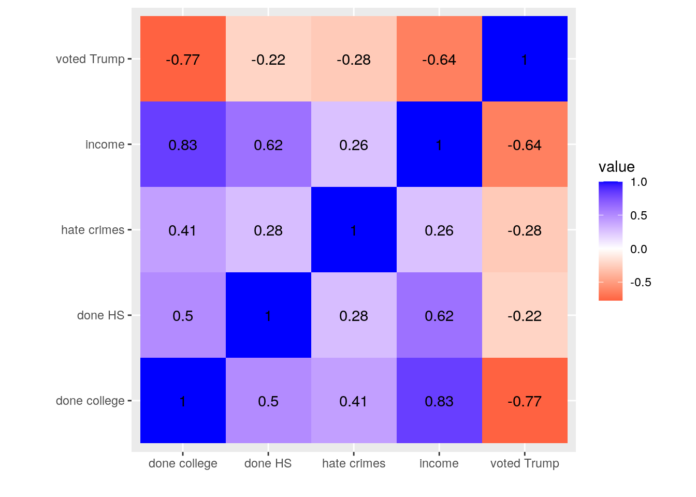
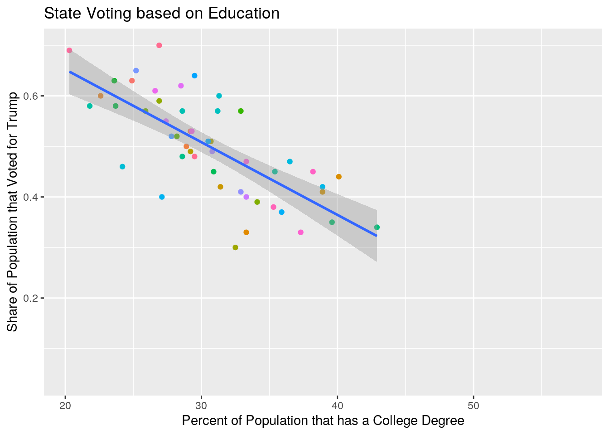
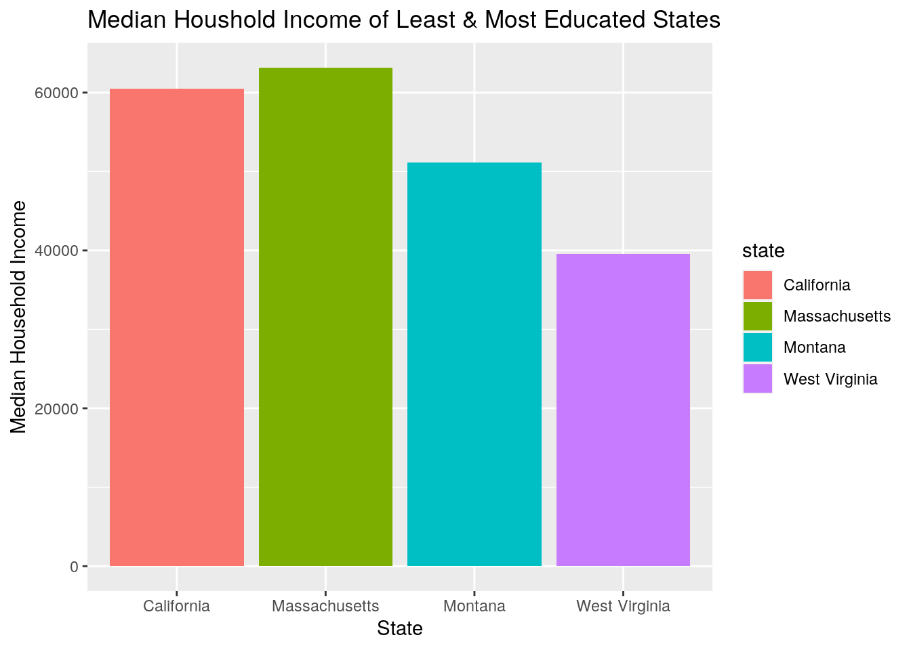

library(dplyr)
library(tidyverse)crime dataset because it had many variables that I either wasn't interested in, or was taken outside of 2016, and I felt it was important to make sure all the data in that set was taken in the same year. I tried using pivot_longer to see if there was a way I could better tidy my data but I, personally, preferred the original dataset, so I undid that with pivot_wider.# removing variables
crime <- crime %>% select(-share_pop_metro, -share_pop_hs, -share_white_poverty,
-gini_index, -state_abbrev)
# trying to tidy
tidy <- crime %>% pivot_longer(contains("hate"))
glimpse(tidy)## Rows: 102
## Columns: 8
## $ state <chr> "Alabama", "Alabama", "Alaska", "Alaska", "Arizona"…
## $ median_house_inc <int> 42278, 42278, 67629, 67629, 49254, 49254, 44922, 44…
## $ share_unemp_seas <dbl> 0.060, 0.060, 0.064, 0.064, 0.063, 0.063, 0.052, 0.…
## $ share_non_citizen <dbl> 0.02, 0.02, 0.04, 0.04, 0.10, 0.10, 0.04, 0.04, 0.1…
## $ share_non_white <dbl> 0.35, 0.35, 0.42, 0.42, 0.49, 0.49, 0.26, 0.26, 0.6…
## $ share_vote_trump <dbl> 0.63, 0.63, 0.53, 0.53, 0.50, 0.50, 0.60, 0.60, 0.3…
## $ name <chr> "hate_crimes_per_100k_splc", "avg_hatecrimes_per_10…
## $ value <dbl> 0.12583893, 1.80641049, 0.14374012, 1.65670011, 0.2…# going back to original
untidy <- tidy %>% pivot_wider(names_from = "name", values_from = "value")
glimpse(untidy)## Rows: 51
## Columns: 8
## $ state <chr> "Alabama", "Alaska", "Arizona", "Arkansas…
## $ median_house_inc <int> 42278, 67629, 49254, 44922, 60487, 60940,…
## $ share_unemp_seas <dbl> 0.060, 0.064, 0.063, 0.052, 0.059, 0.040,…
## $ share_non_citizen <dbl> 0.02, 0.04, 0.10, 0.04, 0.13, 0.06, 0.06,…
## $ share_non_white <dbl> 0.35, 0.42, 0.49, 0.26, 0.61, 0.31, 0.30,…
## $ share_vote_trump <dbl> 0.63, 0.53, 0.50, 0.60, 0.33, 0.44, 0.41,…
## $ hate_crimes_per_100k_splc <dbl> 0.12583893, 0.14374012, 0.22531995, 0.069…
## $ avg_hatecrimes_per_100k_fbi <dbl> 1.8064105, 1.6567001, 3.4139280, 0.869208…full_join to join the two datasets because I wanted to keep all of the variables from both datasets. I joined the two datasets by state, and no cases were dropped.fulldata <- crime %>% full_join(education, by = c(state = "State"))
glimpse(fulldata)## Rows: 53
## Columns: 10
## $ state <chr> "Alabama", "Alaska", "Arizona", "Arkansas…
## $ median_house_inc <int> 42278, 67629, 49254, 44922, 60487, 60940,…
## $ share_unemp_seas <dbl> 0.060, 0.064, 0.063, 0.052, 0.059, 0.040,…
## $ share_non_citizen <dbl> 0.02, 0.04, 0.10, 0.04, 0.13, 0.06, 0.06,…
## $ share_non_white <dbl> 0.35, 0.42, 0.49, 0.26, 0.61, 0.31, 0.30,…
## $ share_vote_trump <dbl> 0.63, 0.53, 0.50, 0.60, 0.33, 0.44, 0.41,…
## $ hate_crimes_per_100k_splc <dbl> 0.12583893, 0.14374012, 0.22531995, 0.069…
## $ avg_hatecrimes_per_100k_fbi <dbl> 1.8064105, 1.6567001, 3.4139280, 0.869208…
## $ PercentHighSchoolOrHigher <dbl> 85.8, 92.7, 86.8, 86.2, 82.9, 91.4, 90.5,…
## $ PercentBachelorsOrHigher <dbl> 24.9, 29.2, 28.9, 22.6, 33.3, 40.1, 38.9,…filter to only see the data gathered from the state I live in. Instead of seeing the average hate crime rate gathered from two different places, I averaged out the two values using mutate and made a new dataset to include that value instead. I removed the original two hate crime rate variables using select. I then used the arrange function to sort my data from highest to lowest percentage of individuals who had at least a bachelors degree, and used that to see if as the percentage decreased so did the median household income per state. I saw that it did not seem to follow that same pattern. I then decided to narrow down my dataset to show less variables, since there were only certain variables I wanted to use for my graphs.data. A heatmap helps visualize our data in clusters of samples and features. I started by renaming the columns because they were too long and appeared jumbled on the heatmap. I also changed the gradient to go with the US flag colors since my data comes from each state. From the heatmap it seems that college education level and household income have the highest correlation, and high school education level and the percentage of the population that voted for Trump have the lowest correlation.heatmap <- data %>% select(-state)
colnames(heatmap) <- c("income", "hate crimes", "done college",
"done HS", "voted Trump")
heatmap %>% select_if(is.numeric) %>% cor() %>% as.data.frame %>%
rownames_to_column %>% pivot_longer(-1) %>% ggplot(aes(rowname,
name, fill = value)) + geom_tile() + geom_text(aes(label = round(value,
2))) + xlab("") + ylab("") + coord_fixed() + scale_fill_gradient2(low = "red",
mid = "white", high = "blue")
ggplot(fulldata, aes(PercentBachelorsOrHigher, share_vote_trump)) +
geom_point(aes(color = state)) + geom_smooth(method = "lm") +
theme(legend.position = "none") + print(labs(title = "State Voting based on Education",
y = "Share of Population that Voted for Trump", x = "Percent of Population that has a College Degree"))## $y
## [1] "Share of Population that Voted for Trump"
##
## $x
## [1] "Percent of Population that has a College Degree"
##
## $title
## [1] "State Voting based on Education"
##
## attr(,"class")
## [1] "labels"
max and min. I then used a bar graph to compare the median household incomes of those states. Massachusetts had the highest education level overall and also had the highest median household income of these states. However, California was the lowest educated state overall and was nowehere near having the lowest median household income. We see from our heatmap that household income and college education do have a positive correlation of 0.83, and household income and high school education also have a positive correlation of 0.62.# most educated state based on college education level
max(fulldata$PercentBachelorsOrHigher, na.rm = T) #Massachusetts## [1] 57.6# least educated state based on college education level
min(fulldata$PercentBachelorsOrHigher, na.rm = T) #WestVirgnia## [1] 20.3# most educated state based on high school education level
max(fulldata$PercentHighSchoolOrHigher, na.rm = T) #Montana## [1] 93.2# least educated state based on high school education level
min(fulldata$PercentHighSchoolOrHigher, na.rm = T) #California## [1] 75.5target <- c("Massachusetts", "Montana", "West Virginia", "California")
bargraph <- filter(data, state %in% target)
ggplot(bargraph, aes(x = state, y = median_house_inc)) + geom_bar(aes(fill = state),
stat = "summary") + geom_errorbar(stat = "summary", width = 0.5) +
print(labs(title = "Median Houshold Income of Least & Most Educated States",
y = "Median Household Income", x = "State"))## $y
## [1] "Median Household Income"
##
## $x
## [1] "State"
##
## $title
## [1] "Median Houshold Income of Least & Most Educated States"
##
## attr(,"class")
## [1] "labels"